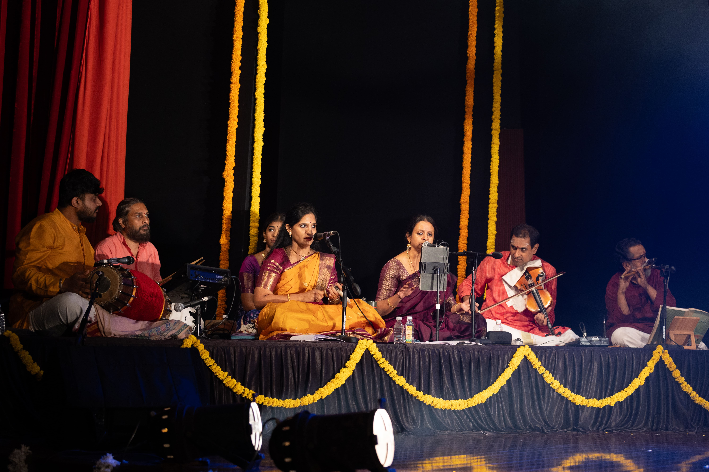

Sound & Rhythm
The Musical Foundation
Bharatanatyam is inseparable from its musical accompaniment. The Carnatic music tradition provides the melodic and rhythmic framework that guides every movement and expression.
Music & Instrument Images
Visuals from the Carnatic ensemble and percussion that support Bharatanatyam.

The voice guiding the dancer through melody and emotion.

The primary drum of Bharatanatyam rhythm and tala.

Melodic accompaniment that echoes and enhances the dancer.
Carnatic Music Tradition
Bharatanatyam is accompanied by Carnatic (Karnatak) music, the classical music tradition of South India. This musical system provides the melodic framework, rhythmic cycles, and structural elements that shape the dance.
The music consists of compositions in languages like Sanskrit, Telugu, Tamil, and Kannada, often set to ragas (melodic modes) and talas (rhythmic cycles). The vocalist, instrumentalists, and percussionists work together to create a rich tapestry of sound that supports and enhances the dancer's movements.
Key Instruments
The Bharatanatyam ensemble typically includes several instruments, each playing a specific role in the performance.
- Voice: The vocalist sings the compositions and provides rhythmic syllables
- Veena: A string instrument that provides melodic accompaniment
- Violin: Often used for melodic support and improvisation
- Flute: Occasionally used for certain ragas and compositions
- Mridangam: The primary percussion instrument
The Ensemble
- Lead vocalist (or vocalist-instrumentalist)
- Melodic accompanists
- Percussionists
- Sometimes additional vocalists
- Conductor (nattuvanar)
Rhythm & Percussion
Rhythm is fundamental to Bharatanatyam. The mridangam, a double-headed drum, provides the primary rhythmic accompaniment, while the vocalist adds rhythmic syllables called "sollukattu" or "jatis."
The nattuvanar (conductor) maintains the tala and cues the dancer with hand signals and vocal commands. This rhythmic framework ensures precise synchronization between music and movement.
Dance-Musical Integration
In Bharatanatyam, music and dance are inextricably linked. The dancer interprets the musical phrases through movement, while the musicians respond to the dancer's expressions. This symbiotic relationship creates a dynamic, living performance.
The music not only provides accompaniment but also inspires and guides the dancer's interpretation, making each performance a unique collaboration between artist and musicians.